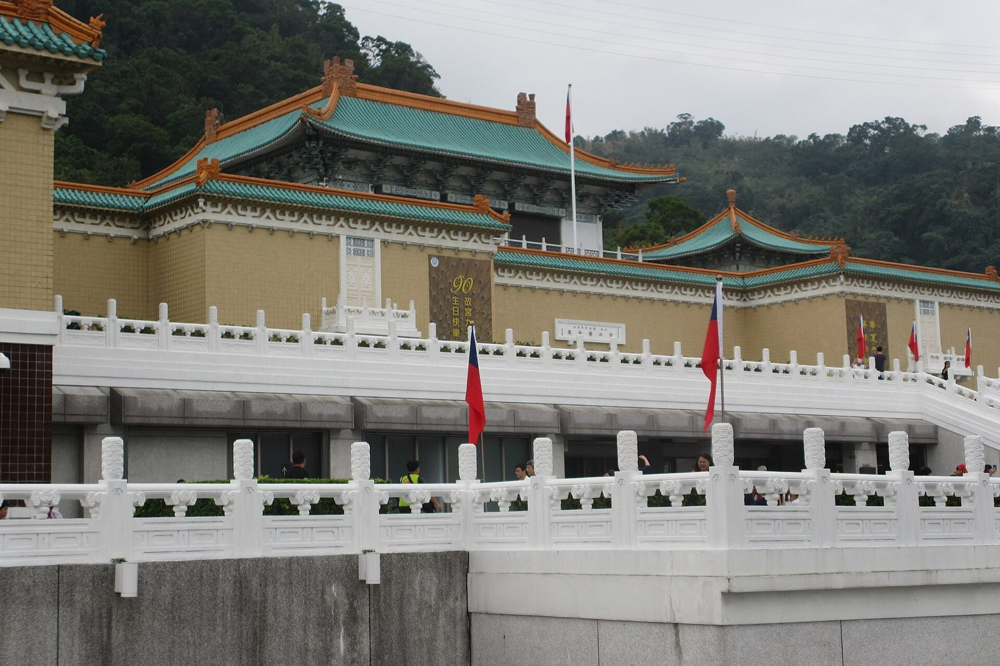

타이베이 고궁박물원 입장료, 오디오가이드까지 얼마일까?
무료 대상과 무료 개방일, 한국어 오디오가이드 빌리는 곳, 월요일 휴관과 버스 타는 곳까지 — 가기 전에 알아 두면 덜 헤매는 것만 골랐습니다.
게시
“고궁박물원 입장료는 얼마고, 한국어 오디오가이드도 있을까요?” 타이베이 스린에 있는 국립고궁박물원은 첫 대만 여행 일정에 자주 들어가는 곳이지만, 오디오가이드 요금이나 휴관일은 예전 정보가 섞여 돌아다녀요. 고궁박물원 공식 홈페이지의 요금·개관·교통 안내를 바탕으로 2026년 10월 기준으로 정리해봤어요.
01 · 고궁박물원 입장료 한눈에 비교하기
| 구분 | 요금 | 대상 |
|---|---|---|
| 일반권 | NT$350 | 한국인 성인 여행자 대부분 |
| 우대권 | NT$150 | 국제학생증(ISIC) 소지자 등 |
| 무료 | NT$0 | 만 18세 미만(국적 무관), 장애인과 동반자 1명 등 |
| 단체권 | 1인 NT$320 | 10인 이상, 단체 음성 안내기 1인 NT$50 별도 |
| 101 전망대 연계권 | NT$820 | 第一展覽館 + 타이베이 101 전망대 |
요금은 고궁박물원 공식 요금표 기준이에요(2026년 10월 기준). 표는 북부원구 第一展覽館(본관) 요금이고, 1월 1일·정월대보름·5월 18일·9월 27일·10월 10일은 국적과 관계없이 무료로 개방합니다. 2026년에는 10월 17일(토, 대만 문화의 날)도 무료이고, 10월 31일 저녁에는 '타이베이 백야(臺北白晝之夜)' 행사로 무료 관람이 열려요.
02 · 한국어 오디오가이드, 어디서 얼마에 빌릴까
성인용 NT$200 한국어를 포함해 영어·일본어 등 여러 언어가 있고, 第一展覽館 1층 오디오가이드 카운터에서 1회 NT$200에 빌려요(2026년 10월 기준).
어린이용 NT$150 7~12세용 가이드는 중국어·영어 두 가지예요. 한국어판은 없으니 아이와 간다면 미리 알아 두세요.
여권은 맡기지 않아요 빌릴 때 신분증이나 보증금 영수증을 스캔만 하고 돌려받아요. 여권을 맡겨야 한다는 예전 정보와 달라졌습니다.
정시 해설은 수신기 NT$50 영어 정시 해설은 화~일 10:00·15:00, 중국어는 10:30·14:30에 1층 카운터 앞에서 출발해요. 온라인 신청이고 회당 20명, 해설용 수신기 대여료 NT$50이 따로 듭니다.

03 · 고궁박물원 휴관일과 개관 시간
화~일 09:00~17:00 표 판매와 교환은 16:30에 끝나요(2026년 10월 기준). 늦은 오후에 간다면 시간을 넉넉히 잡으세요.
월요일은 정기 휴관 다만 '월요일 특별 개관일'이 따로 있어요. 2026년 남은 날은 10월 26일, 11월 9일, 12월 7일입니다.
인기 국보는 순회 중일 수 있어요 취옥백채(翠玉白菜)와 육형석(肉形石)은 2026년에도 해외·남부원구·다른 박물관 전시를 오갔어요. 꼭 보고 싶다면 공식 홈페이지의 두 작품 '展覽動態' 공지를 출발 전에 확인하세요.
아이와 함께라면 B1 第一展覽館 B1 어린이 학습센터(兒童學藝中心)는 무료이고 개관 시간이 본관과 같아요. 옆 정원 지선원(至善園)도 무료로 들어갈 수 있습니다.
04 · 스린역에서 고궁박물원 가는 법과 주차
MRT 단수이신이선 스린역(R16) 1번 출구로 나와 1~2분 걸으면 중정로(中正路) 버스 정류장이 나와요. 여기서 홍30(紅30)번을 타면 약 15분 뒤 본관 B1 입구 앞에 내려 줍니다. 815·304·300·255·소18·소19·시민소형버스1번도 고궁박물원 앞까지 가고, 이지카드로 탈 수 있어요. 원산선을 탄다면 젠난루역(BR15)에서 종20·남7번, 다즈역(BR14)에서 종13번 버스로 약 10분이에요.
차로 간다면 박물관 주변 공영 주차장에 소형차 88면이 있고, 평일 1회 NT$50, 주말·공휴일 시간당 NT$40이에요(2025년 6월 공지, 2026년 10월 확인). 오토바이 주차는 무료입니다.

“年齡未滿18歲者（不分國籍）” — 만 18세 미만은 국적과 관계없이 무료라는 고궁박물원 공식 요금표 문구예요.
타이베이 일정에 박물관을 넣을지 고민된다면 타이베이 펀패스 3일권 본전 계산과 타이베이 101 전망대 아이 요금도 함께 보세요. 박물관 정보는 국립고궁박물원 페이지에, 다른 명소는 타이베이 체험·관광지와 타이베이 맛집 지도에 모아 두었어요. 관람을 마치고 스린역으로 돌아왔다면 역 근처 딤섬집 Bao Bao Bao도 있어요.
지도에서 스린 근처 딤섬집도 확인해보세요
박물관을 나와 스린역으로 돌아가는 길에 들를 식당을 미리 찜해 두면 오후 동선이 편해져요.